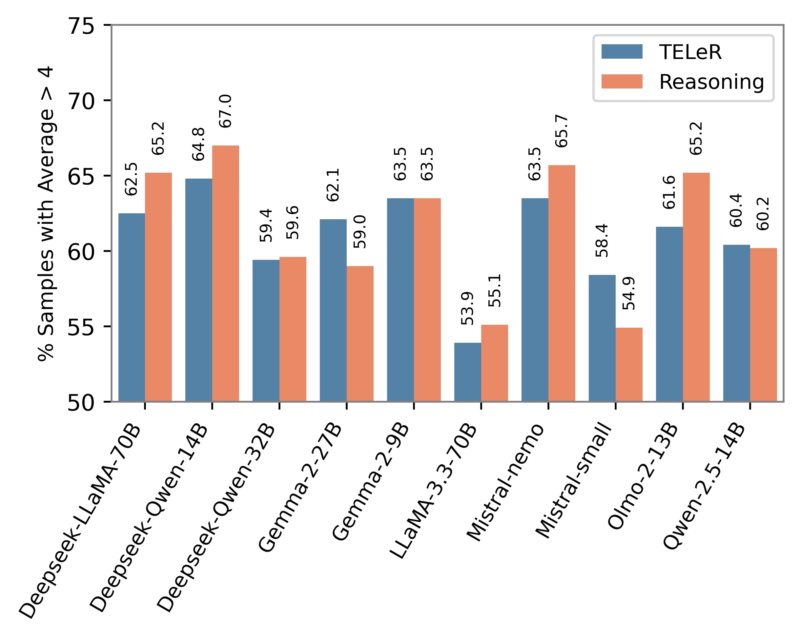

Access to real-world information is often noisy and fragmented. Constructing a coherent narrative from such fragments requires models to reconstruct missing spans within a broader storyline, commonly referred to as text infilling, while preserving consistency with both the local context and the global storyline. Despite using text infilling as a pre-training objective in many Large Language Models (LLMs), their actual performance on real-world narrative infilling remains underexplored.
We introduce a multi-domain benchmark of ~9.2K instances for narrative infilling, constructed by masking one to three sentences across four narrative types: encyclopedic text, common-sense stories, news articles, and visual narratives. Using this benchmark, we evaluate 20 instruction-tuned open-source LLMs ranging from 1.5B to 70B parameters across varying levels of instruction specificity and reasoning guidance, using standard automatic metrics and a qualitative framework covering five narrative dimensions.
Results show that model scale does not reliably predict infilling quality: Gemma-2-2B achieves the highest qualitative score (4.02/5), outperforming models over ten times larger. Explicit reasoning offers limited benefits (+0.6% with chain-of-thought), and short narratives and domain characteristics are stronger predictors of difficulty than infill position alone.
The 2B-parameter Gemma-2-2B scores higher than every other model, ahead of DeepSeek-Qwen-32B (↓6.6%) and LLaMA-3.3-70B (↓8.3%).
Larger models write fluent, plausible text, but it drifts from the specific story it has to connect. Infilling rewards staying close to the context more than raw capacity.
Best score across prompt levels L0–L4. Highlighted: models of 8B or fewer. Axis starts at 3.5.
Moving from a bare prompt (L0) to a moderate task description (L2) raises quality by about 3% and automatic scores by 16.7%. Opening gaps gain the most (+9.3% high-quality completions).
Few-shot examples (L4) hurt: they pull attention away from the story itself. DeepSeek-Qwen-1.5B collapses to 2.33.
| Prompt level | Quality (QAvg) | Automatic (AtAvg) |
|---|---|---|
| L0 · Very low | 3.700 | 0.298 |
| L1 · Low | 3.762 | 0.345 |
| L2 · Moderate | 3.800 +2.7% | 0.348 +16.7% |
| L3 · High | 3.781 | 0.344 |
| L4 · Few-shot | 3.643 −3.7% | 0.295 |
L2 change is relative to L0; L4 change is relative to L3.
On top of the moderate prompt, chain-of-thought lifts quality by only +0.6%. Larger models likely reason implicitly already, so explicit prompts refine rather than change their output.
Asking for alternative scenarios pushes the model away from the given story: counterfactual prompting drops high-quality completions to 54.9%.
| Guidance | QAvg | % > 4 |
|---|---|---|
| L2 baseline | 3.80 | 62.8% |
| Abductive | 3.81 | 63.4% |
| Causal | 3.81 | 63.8% |
| Chain-of-Thought | 3.82 | 64.0% |
| Counterfactual | 3.64 | 54.9% |

Share of completions with QAvg > 4, standard vs. reasoning prompts. Gains depend on the model: Olmo-2-13B improves most (+3.6%).
Short stories are the worst case. With only 5–6 sentences there is too little context to rebuild the gap, wherever it sits.
Domain matters too. News is easiest and visual stories (SIND) hardest. Reasoning helps story-like narratives at every position but hurts factual text, where domain knowledge matters more than inference.
| Domain | Opening | Middle | Closing |
|---|---|---|---|
| ROCStories | 63.2 → 69.3 ↑ | 67.0 → 72.6 ↑ | 54.0 → 55.0 ↑ |
| SIND | 44.6 → 50.8 ↑ | 48.6 → 53.8 ↑ | 46.9 → 48.8 ↑ |
| CNN/DailyMail | 67.9 → 63.8 ↓ | 65.4 → 61.3 ↓ | 65.3 → 60.8 ↓ |
| Wikipedia | 57.1 → 52.4 ↓ | 60.5 → 57.3 ↓ | 60.2 → 56.3 ↓ |
Share of completions with QAvg > 4, by domain and gap position.
@article{hossain2026evaluating,
title={Evaluating Whether LLMs Can Reliably Connect the DOTs?},
author={Hossain, Eftekhar and Salvador, John and Karmaker, Santu},
journal={arXiv preprint arXiv:2609.38406},
year={2026}
}